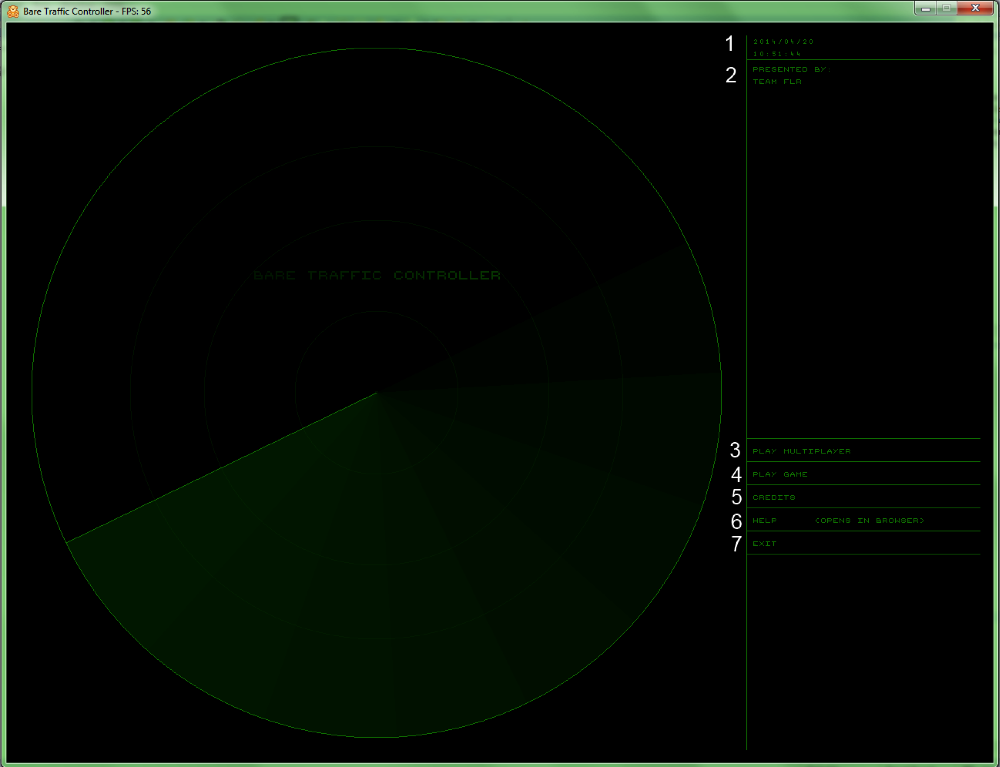
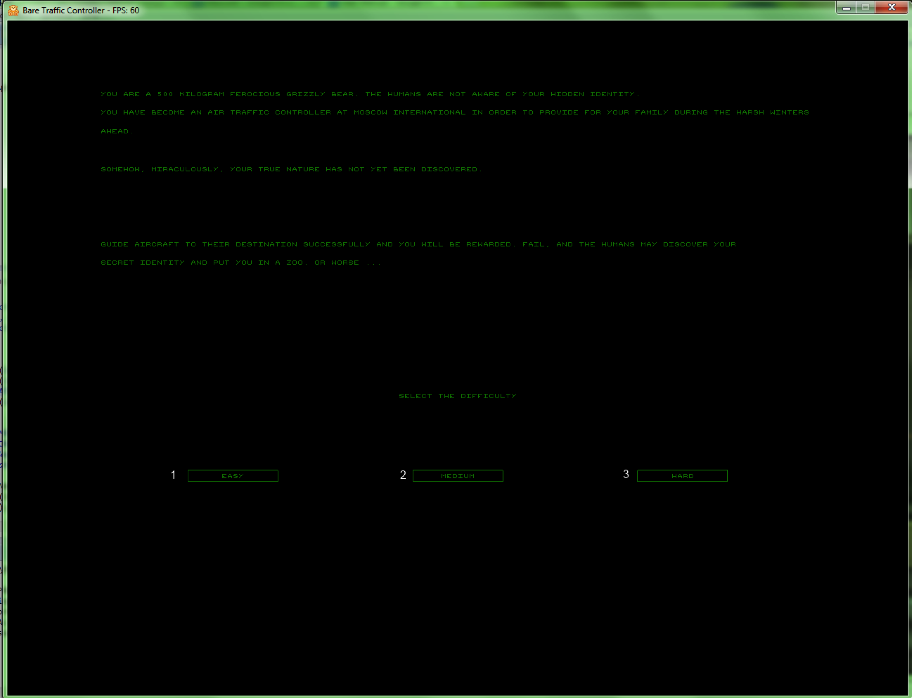
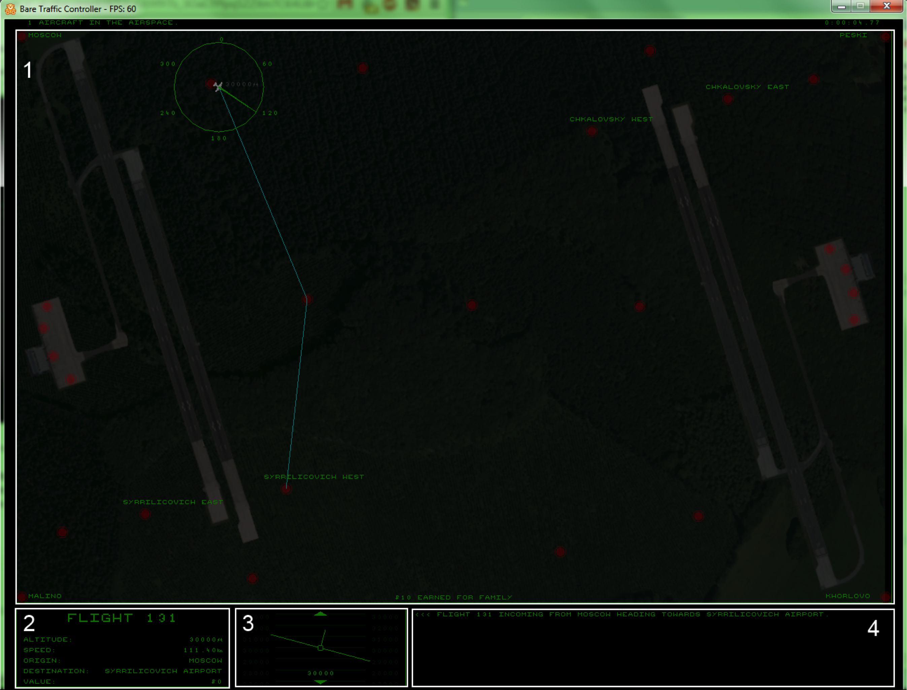
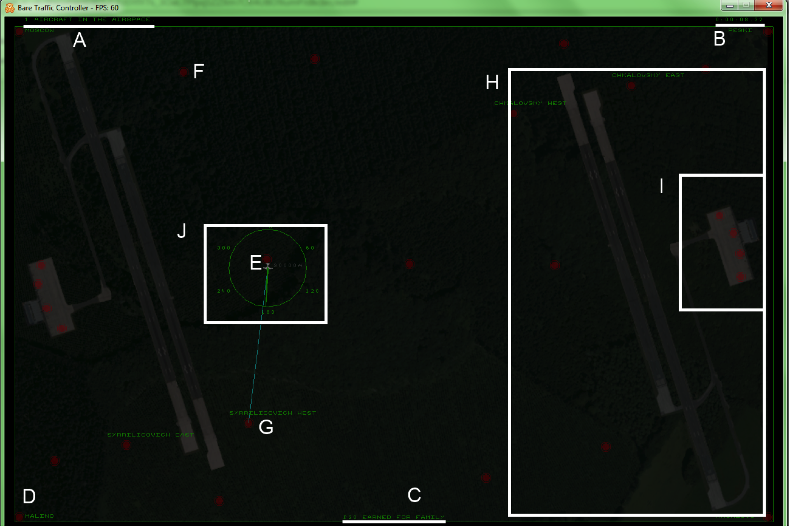
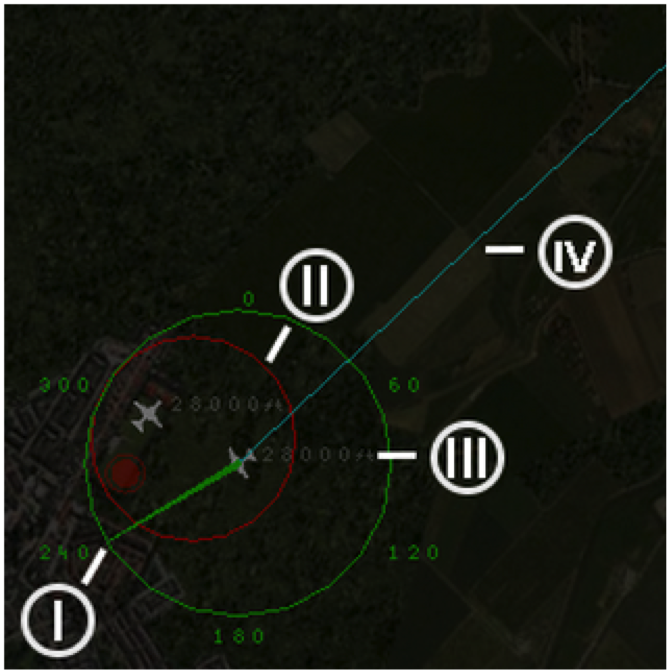
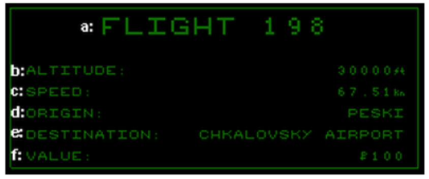
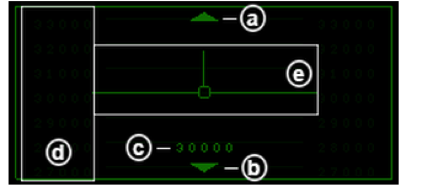
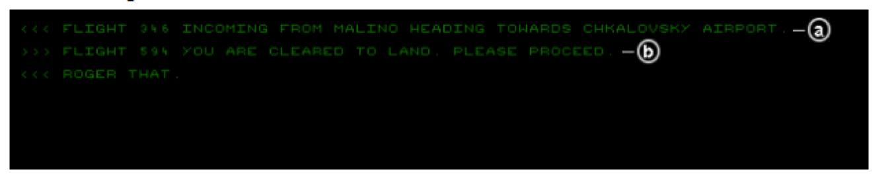

User Manual
If you need any help using Bear Traffic Contoller: Over the Cloud then take a look at the user manual below.
Launching the game
Main Menu
After launching the game, you will be presented with the following main menu.
- Current date and time are displayed in the top right corner of the main menu.
- Brief Credits of the development team.
- Selecting the “PLAY MULTIPLAYER” button will allow the user to host a multiplayer game or connect to an existing multiplayer host.
- Selecting the “PLAY GAME” button will launch the difficulty select screen for the main game, the user can start the game from here.
- Selecting the “CREDITS” button will show details of the developers of the game. The credits screen can be exited by pressing the “Escape Key”.
- Selecting the “HELP” button will open this manual in your default browser.
- Selecting the “EXIT” button will exit the game.
Single Player Mode
Difficulty Selection Interface
Upon selecting the “PLAY GAME” button on the main menu, you are presented with the following difficulty select screen.
- Selecting the “EASY” button will launch a single player game in easy difficulty, the aircraft here travel at a slow speed.
- Selecting the “MEDIUM” button will launch a single player game in medium difficulty, the aircraft here travel at a medium speed.
- Selecting the “HARD” button will launch a single player game in hard difficulty, the aircraft here travel at a fast speed.
The difficulty determines the speed of the aircraft, the rate at which flights spawn and the separation violation distance. This is the distance in which planes have to be from each other, breaking this rule will lead to a loss of points.
You can exit to the main menu by pressing the “Escape” key.
Single Player Interface
After selecting a difficulty you will be presented with the following interface.
- The main airspace, this displays aircraft, the waypoints and the the route in which the aircraft is taking.
- This box contains information about the selected aircraft.
- The altimeter, this displays the selected aircraft’s altitude and allows you to change it.
- The communication log, this box will constantly update displaying messages between the air traffic controller and the pilots of the aircraft. This will warn you when aircraft will be arriving at a waypoint.
1. Main Airspace Interface
- Plane Counter, this displays the number of aircraft in the airspace.
- Timer, this displays the elapsed time since the game began.
- Score/Earnings, this displays the current amount of money you have earnt.
- Origin/Destination Waypoint, aircraft will enter/leave the airspace via these waypoints.
- Plane, this is the entity that you need to maneuver around the airspace.
- Waypoint, these are used to control the route the aircraft will take around the airspace.
- Landing Waypoint, there are two of these for each airport, these are the final waypoints of an aircraft’s flight plan, aircraft will circle here waiting for clearance to land.
- Airport, one of two airports in the airspace that an aircraft can take-off or land in.
- Terminal, aircraft that have landed at the airport will taxi to these parking points before being allowed to take-off again.
- Selected Aircraft, this aircraft has been selected, you can see further detail of a selected aircraft below.
1.J Selected Aircraft
- Plane Bearing, this large green circle denotes the bearing around the aircraft that it can yaw to (in degrees). The green pointer protruding from the aircraft denotes the current bearing, as well as allowing the user to adjust the bearing.
- Separation Violation Warning, the red circle will surround two aircraft that are at risk of colliding, highlighting a separation violation. The radius that aircraft have to be separated to avoid the points penalty depends on the difficulty setting selected.
- Current Altitude, all aircraft display their current altitude next to their icon.
- Flight Path, this is the route which the aircraft is traveling along, this can be interacted with to change the route the aircraft will take to it’s destination.
2. Flight Display
- Flight Code, this is a unique number identifying each flight.
- Altitude, this is the aircraft’s current altitude.
- Speed, this is the aircraft’s current speed.
- Origin, this is the entry/exit waypoint the aircraft entered the airspace via.
- Destination, this is the entry/exit waypoint the aircraft should exit the airspace via, this includes landing at airports.
- Value, this is the amount of points you earn for carrying that aircraft to its exit waypoint.
3. Altitude Display
- Up Arrow, clicking this button will increase the selected aircraft’s altitude if not already at maximum.
- Down Arrow, clicking this will decrease the selected aircraft’s altitude if not already at minimum.
- Current Altitude, displays the current altitude of the selected aircraft.
- Altimeter, displays the altitude, with the alignment of each altitude division, and the horizon line of the plane denoting it’s current altitude.
- Roll Display, displays the current roll/level if the aircraft. Useful to display the direction an aircraft is turning.
4. Communication Log
- Incoming Message, (<<<) this denotes information created by the default operations of the aircraft.
- Outgoing Message, (>>>) this denotes the information relevant to your intervention on the aircraft’s route.
Shop/Game Success Screen

The above screen is shown upon successful completion of the game, it ultimately decides the outcome of your bear’s story.
- MONEY, The money you earned during the game (displayed in Rubles).
- Items: Clicking these items will purchase them, spending your hard earned Rubles and ultimately deciding the fate of you and your cubs.